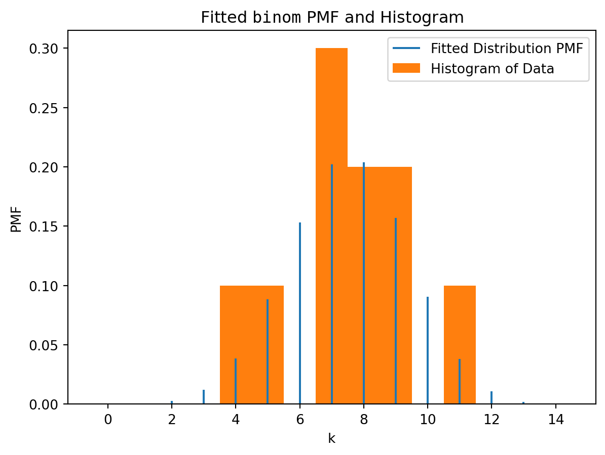
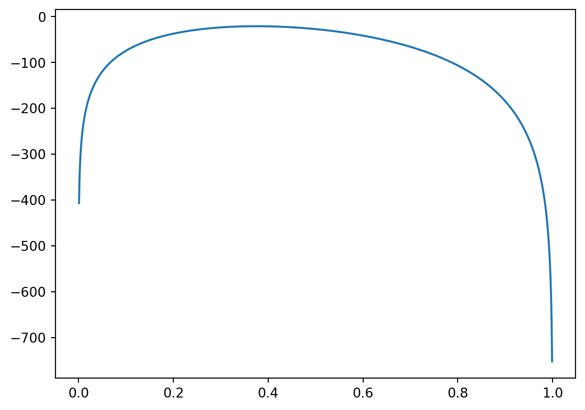

import numpy as np
data = np.array([8, 4, 7, 11, 9, 7, 5, 9, 8, 7])Lab 8
1 Maximal likelihood estimation
Reminder about the theory
Let \(X\) be a random variable whose distribution depends on a parameter \(\theta\in\mathbb{R}\), or on a group of parameters, \(\theta=(\theta_1,\ldots,\theta_k)\). Let \(x_1,\ldots,x_n\) be a sample of values of the random variable \(X\). The likelihood function \(\mathcal{L}(\theta\mid x_1,\ldots,x_n)\) is defined as follows:
- for a discrete random variable \(X\) with the probability mass function \(p_X(x)=\mathbb{P}(X=x)\),
\[ \mathcal{L}(\theta\mid x_1,\ldots,x_n) = p_X(x_1)\cdot\ldots\cdot p_X(x_n); \]
- for a continuous random variable \(X\) with the probability density function \(f_X(x)\),
\[ \mathcal{L}(\theta\mid x_1,\ldots,x_n) = f_X(x_1)\cdot\ldots\cdot f_X(x_n). \]
The log-likelihood function is the (natural) logarithm of the likelihood:
\[ \begin{aligned} L(\theta\mid x_1,\ldots,x_n): &= \ln \mathcal{L}(\theta\mid x_1,\ldots,x_n)\\ &= \ln p_X(x_1)+\ldots + \ln p_X(x_n) \end{aligned} \]
for the discrete case; and the same formula with \(p_X\) replaced by \(f_X\) holds for the continuous case.
Fitting data in Python
Suppose we are given a sample
And suppose that we are told that this is a sample generated by a binomial random variable \(X\sim Bin(20,p)\), i.e \(X:\Omega\to\{0,1,\ldots,20\}\) with
\[ \mathbb{P}(X=k)= \binom{20}{k} p^k (1-p)^{n-k}. \]
however, the probability \(p\) of a “success” is unknown (i.e. here \(\theta=p\)). One needs to find the value of \(p\) which would make the probability to observe data the highest possible.
The following code would do the needed:
from scipy.stats import binom, fit
bounds = [(20,20), (0, 1)]
fit(binom, data, bounds) params: FitParams(n=20.0, p=0.37499999702200476, loc=0.0)
success: True
message: 'Optimization terminated successfully.'Let’s discuss this code from the end. The function fit has three arguments:
binomis the class of the distributions (fromscipy.stats) in which we are looking for a best fit;datais the given sample;boundssets bounds for the parameters of the considered distribution: in this case,binomhas two parameters: \(X\sim Bin(n,p)\), i.e. there are \(n\) and \(p\). \(n\) is given to be \(20\) (we know the number of attempts), whereas \(p\in[0,1]\) is the unknown probability. Note thatboundsis a Python list, whose entries are tuples. Tuples are very similar to lists, the main difference is that the tuple can’t be changed after it is defined (whereas a list may be e.g. extended or some its elements may be changed or removed). Each tuple sets the lower and the upper bounds for the corresponding parameter. So, for \(n\) we request \(20\leq n\leq 20\) (that just means \(n=20\), as needed), and for \(p\) we have \(0\leq p\leq 1\).
The output tells us that the best possible \(n=20.0\) (that is not surprising as we requested this) and the best possible \(p\approx 0.375\) (we ignore loc for now). The values are accessible:
res = fit(binom, data, bounds)
res.paramsFitParams(n=20.0, p=0.3749999934837289, loc=0.0)so that there are two parameters, and the maximum likelihood estimator is the second of them:
res.params[1]0.3749999934837289(and res.params[0] would return 20.0).
Remark. You may notice that the values of p appeared to be slightly different. It’s because the internal algorithm of how fit maximises the likelihood function is the so-called stochastic algorithm, it has a random output (though pretty close to the “real” point of maximum).
In the first task, we will test the work of fit function for the case when we know the answer. Recall that, to generate e.g. \(5\) values (outputs) of a Bernoulli random variable \(X\in\{0,1\}\) with \(\mathbb{P}(X=1)=p\) for some \(p\), e.g. for \(p=0.4\), we need to use the code
from scipy.stats import bernoulli
p = 0.4
bernoulli.rvs(p, size = 5, random_state = 10)array([1, 0, 1, 1, 0], dtype=int64)Here, recall, random_state can be any integer number, but if you use 10 your output will be exactly like above.
Remark. Note also that you could write here more “full” code
bernoulli.rvs(p = p, size = 5, random_state = 10)array([1, 0, 1, 1, 0], dtype=int64)Don’t be confused with p = p: the first p here is the name of an argument of function bernoulli.rvs (indeed, just such a short name), where the second p in p = p is the name of the variable we defined previously. Python allows such clashes (as it is clear what is what). Moreover, this is a kind of standard coding practice.
1.1
Generate \(n = 100\) values of a Bernoulli random variable \(X\) with \(\mathbb{P}(X=1)=0.3\), using random_state = 100, and assign the resulting Numpy-array to the variable data_ber.
Check the output by calculating its sum:
data_ber.sum()25Stress that the calculated sum is the number of \(1\)-s in the generated data.
1.2
Find the maximum likelihood estimate for \(p=\mathbb{P}(X=1)\), using fit function for the data data_ber (stress that bernoulli has only one parameter, denoted below by p, hence, bounds should contain only one tuple for the range of \(p\in[0,1]\)). Assign the result to res_ber.
Check the output:
FitParams(p=0.25000000018998997, loc=0.0)As we can see, the answer is pretty close to the real maximum likelihood estimate (known from lectures), which \(\frac{k}{n}\), where \(k\) is the number of \(1\)-s and \(n\) is the total number of trials: the absolution value of the difference:
np.abs(data_ber.sum()/n - res_ber.params[0])1.8998996820229763e-10On the other hand, the maximum likelihood estimator does not recover the real probability p = 0.3 with which the data data_ber was generated. This because the sample size is relatively small.
1.3
Repeat the previous steps but generate now a sample of the size \(n = 100000\). Assign the output of fit function to res_big_ber.
Check the found value:
res_big_ber.params[0]0.2998800031716013so the result is much closer to \(0.3\).
Maximum likelihood estimation of several parameters at once
Let’s now return back to the dataset data. Suppose now that we know only that it follows the binomial distribution: \(X\sim Bin(n,p)\), where \(n\) is not know exactly, but we expect that \(1\leq n\leq 25\). We can then modify the bounds for \(n\):
bounds = [(1, 25), (0, 1)]
res = fit(binom, data, bounds)
res.paramsFitParams(n=14.0, p=0.5357142800240884, loc=0.0)Thus, the highest probability to see the sample data, for the given restriction on \(n\), would be if \(X\sim Bin(14, \approx 0.5357)\).
Moreover, the output of fit function (which we denoted res) can be plotted:
import matplotlib.pyplot as plt
res.plot()
plt.show()
Remark. Similarly, to the tasks above, the data here was initially generated by very different parameters: \(X\sim Bin(18, 0.435)\). However, the fitting for so small sample can’t reconstruct this. The sample is random, and it appeared that among all \(Bin(n,p)\) the distribution \(X\sim Bin(14, \approx 0.5357)\) is the closest (the most typical) for such sample.
1.4
Generate \(n=10\) random values of the normal distribution of \(X\sim \mathcal{N}(10, 1.5^2)\) (see Lab 5 (solutions): Task 3.4 for rvs function and e.g. Task 3.3 for using loc argument for the mean and scale for the standard deviation; don’t forget to import norm). Use random_state = 123. Assign the output to data_norm.
Check yourself by calculating mean and standard deviation of the output:
[data_norm.mean(), data_norm.std()][9.595725834510507, 1.8544572022485344]As you can see, the sample is not large enough to “catch” the original mean, though, it’s relatively close.
1.5
Fit the data to a normal distribution: find the normal distribution \(\mathcal{N}(\mu,\sigma^2)\) with \(\mu\in [7,12]\) and \(\sigma\in[1,2]\) which is most likely to be the distribution for the sample data_norm. Assign the result to res_norm.
Check the output:
res_norm.paramsFitParams(loc=9.59572546794093, scale=1.85445718990513)As you can see, the fitting reflects the characteristics of the sample, not the initial distribution (as the sample was not large enough).
Remark. Some of distributions in scipy.stats have own fit methods which do not require using bounds. For example, one can write
norm.fit(data_norm)(9.595725834510507, 1.8544572022485344)In other words, Python looked here among all \(\mathcal{N}(\mu,\sigma^2)\), without any restrictions on \(\mu\) and \(\sigma\).
2 How we can calculate maximum likelihood estimator manually
Let’s return again to data sample:
dataarray([ 8, 4, 7, 11, 9, 7, 5, 9, 8, 7])Suppose we know that it came from \(X\sim Bin(20,p)\), and we want to estimate \(p\) manually, without using fit function. How does fit do the estimation? Look at the formulas at the beginning of this Lab.
We can calculate the likelihood function \(\mathcal{L}(\theta)\) for each particular value of \(\theta = p\). E.g. for \(p=0.4\), we can calculate \(p_X(x)=\mathbb{P}(X=x)\) for each \(x\) from data.
n = 20
p = 0.4
probabilities = binom.pmf(data, n = n, p = p)
probabilitiesarray([0.17970579, 0.03499079, 0.16588227, 0.07099488, 0.15973848,
0.16588227, 0.07464702, 0.15973848, 0.17970579, 0.16588227])We can now calculate the likelihood function at \(p=0.4\):
likelihood = np.prod(probabilities)
likelihood6.974873531555715e-10As you can see, the value is pretty small (as it is a product of probabilities which are always less than \(1\)). It may lead latter to errors, so it is highly recommended to work with log-likelihood instead: we first apply np.log function to all entries in probabilities. Note that log in Numpy stands for \(\ln\) (the natural logarithm).
2.1
Assign to logprobabilities the array of natural logarithms of all entries in probabilities. Assign to loglikelihood the sum of all these logarithms.
Check the output:
loglikelihood-21.08353673407401Remark. Note that the distributions in scipy.stats contains functions logpmf and logpdf for calculation logarithms of PMF (for discrete random variables) and PDF (for continuous random variables), respectively. We could write also:
logprobabilities = binom.logpmf(data, n = n, p = p)
loglikelihood = logprobabilities.sum()
loglikelihood-21.08353673407403Now, we are going to calculate the log-likelihood for a range of \(p\in[0,1]\). We, hence, define a function which combines all previous steps. Let’s call e.g. loglbinom, it will have only one argument: the value of \(p\); we keep the value of \(n\) and data fixed. We can do this in one line
def loglbinom(p):
return binom.logpmf(data, n = n, p = p).sum()It can be also written “longer”:
def loglbinom1(p):
probabilities = binom.pmf(data, n = n, p = p)
logprobabilities = np.log(probabilities)
loglikelihood = logprobabilities.sum()
return loglikelihoodLet’s check that it would be the same as in the previous computations for \(p=0.4\):
[loglbinom(0.4), loglbinom1(0.4)][-21.08353673407403, -21.08353673407401]so both of course coincides with the previously found loglikelihood.
We are going to apply loglbinom to an array fo values of p. For this, we create its vectorised version:
vloglbinom = np.vectorize(loglbinom)2.2
Define array x of 1000 points from \([0,1]\), using np.linspace function (see e.g. Lab 4 or Lab 5). Apply the vectorised function vloglbinom to x (it keeps n=20 and data fixed), and assign the result to y. Plot the graph of y against x.

And finally, one can find now the point of maximum of the log-likelihood: namely, np.argmax(y) returns the index in array y of the maximal element:
ind_max = np.argmax(y)therefore, the value y[ind_max] is the maximal value of the log-likelihood function. However, we are interested in the argument, that is the corresponding x[ind_max]:
x[ind_max]0.37537537537537535that is pretty close to the initially found value. (Surely, if we divide \([0,1]\) on a larger number of pieces, the prediction will be better.)
The following graph has the vertical line at the found value of x[ind_max], as you can see, it comes (pretty close) to the maximum of the log-likelihood function.

3 (If you have time) Biased, unbiased, and consistent maximum likelihood estimates
Recall that, for each sample \(\mathbf{x}=(x_1,\ldots,x_n)\) (which came from a probability distribution with an unknown parameter \(\theta\); henceforth \(n\) is fixed), we can calculate the maximum likelihood estimate \(\hat{\theta}\) which depends, hence, on \(\mathbf{x}\) (and \(\mathbf{x}\) depends on \(\theta\)). Since the sample \(\mathbf{x}\) is random, we may think about the MLE \(\hat{\theta}\) as about random variable, and calculate its expectation \(\mathbb{E}(\hat{\theta})\). To stress that it depends on \(\mathbf{x}\) that depends on \(\theta\), it is often written as \(\mathbb{E}_{\mathbf{x}\mid\theta}(\hat{\theta})\).
The MLE \(\hat{\theta}\) is called unbiased if \(\mathbb{E}(\hat{\theta})=\theta\), i.e. the expected value of the MLE (averaged over all possible samples \(\mathbf{x}\)) would return the theoretical value of the estimated parameter \(\theta\).
If \(\mathbb{E}(\hat{\theta})\neq\theta\), the MLE is called biased, and the difference \(\mathbb{E}(\hat{\theta})-\theta\) characterises the level of bias.
The MLE \(\hat{\theta}\) is called consistent if, being considered as a function of the sample size \(n\), converges to the theoretical value of the parameter \(\theta\) when \(n\to\infty\).
We have demonstrated in Task 1.3 above the consistency property of the MLE estimate for \(p=\mathbb{P}(X=1)\) in Bernoulli distribution. The next task demonstrates in which sense this estimate is unbiased. We know this, of course, from the theory: we proved on lectures that \(\hat{p}=\frac{k}{n}\) where \(k\) is the number of \(1\)-s, and we know that the number of \(1\)-s in \(n\) Bernouilli trials, with the probability \(p\) of success in each, is a binomial random variable with the expectation of \(np\), i.e. we have \(\mathbb{E}(\hat{p})=\frac{np}{n}=p\).
3.1
Generate \(m=1000\) samples, each sample of size \(5\), of Bernoulli random variable with \(p=\mathbb{P}(X=1)=0.3\). For each sample calculate the maximum likelihood estimate \(\hat{p}\) of \(p\). Find the average of the obtained \(MLE\).
0.293600009799476Since the samples are random, your answer will be different. Notice that it’s quite close to \(p=0.3\).